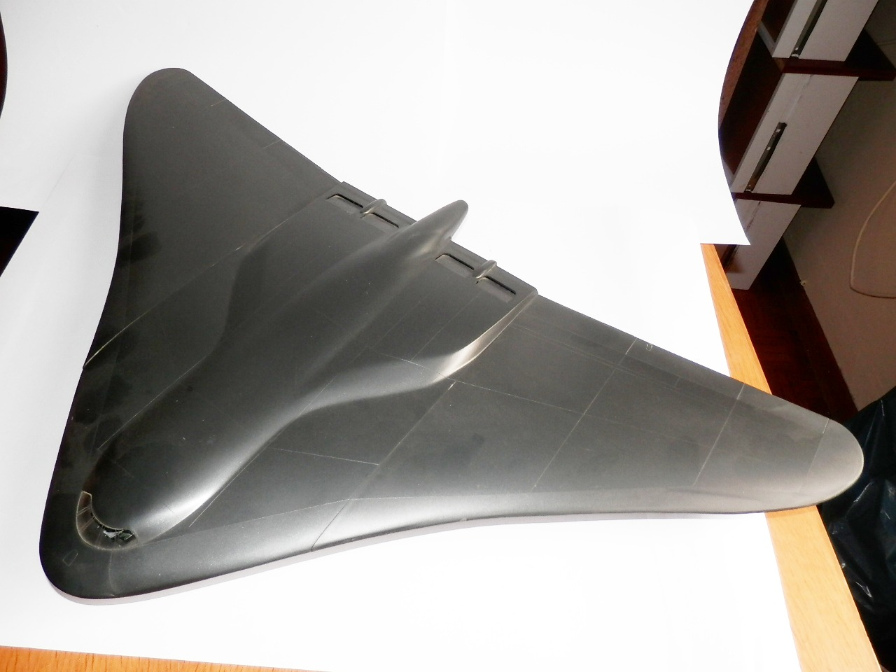
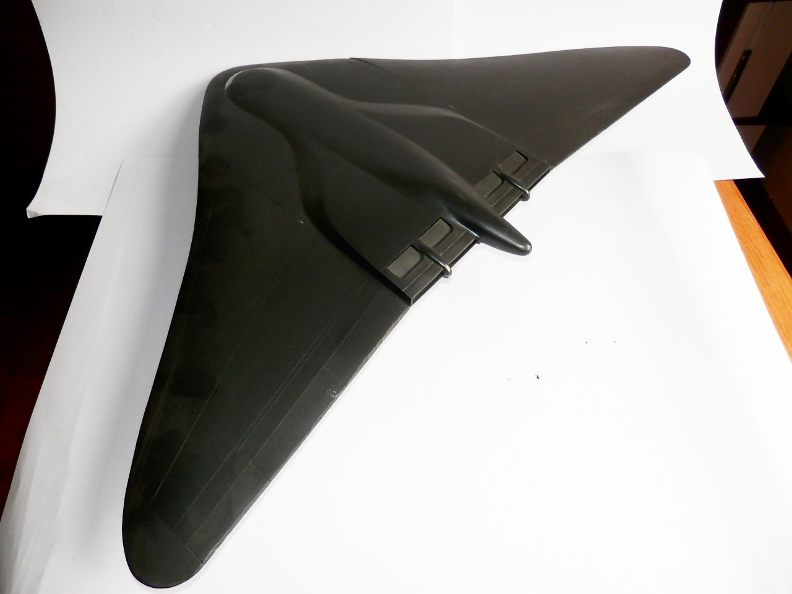
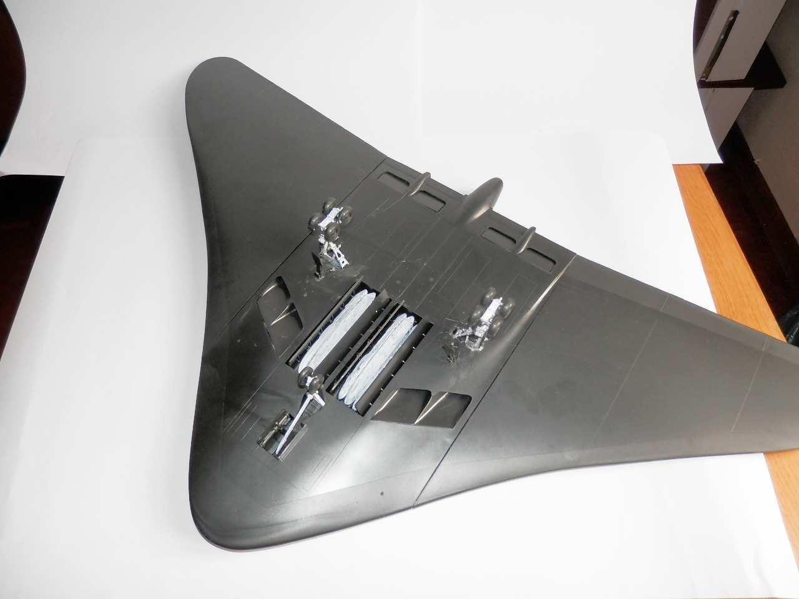

Aerei · scale model archive
Fictional Northrop B2
Fictional Northrop B2 — Kit: Revell. Scale 1:72 The kit hit the market in a time when B2 data were but a distant dream, rendering it a thoroughly…

Photo gallery


English description
Scale 1:72
The kit hit the market in a time when B2 data were but a distant dream, rendering it a thoroughly imaginative—if not entirely harebrained—creation. A lamentable squandering of plastic, one might say, yet not without a certain historical charm for the devoted connoisseur of model-making.
Descrizione italiana
Il kit arrivò sul mercato in un periodo in cui i dati sul B-2 erano ancora un sogno lontano, rendendolo una creazione del tutto immaginaria — se non addirittura un po’ strampalata. Proprio per questo è interessante.